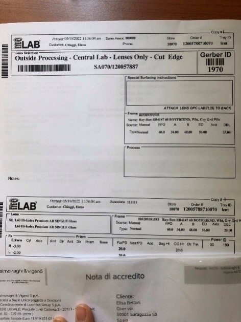
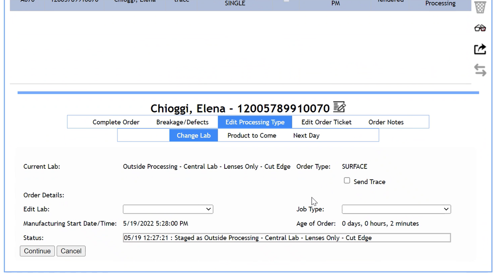
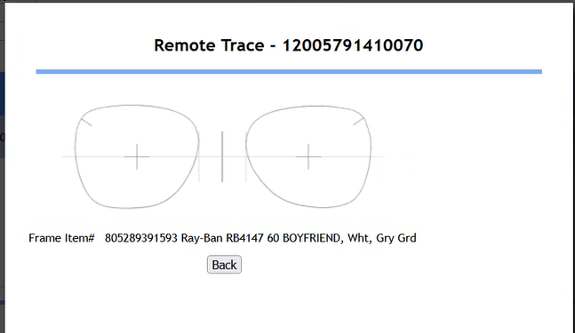
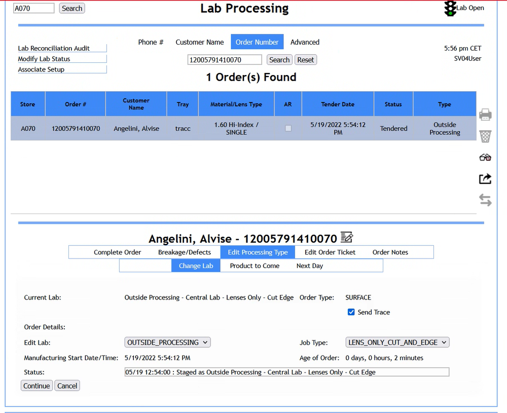
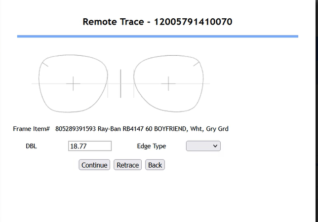
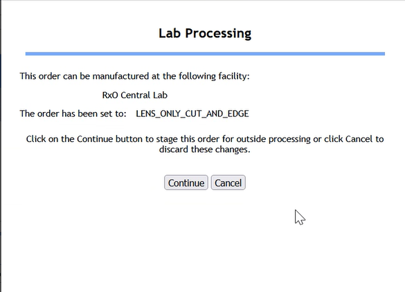
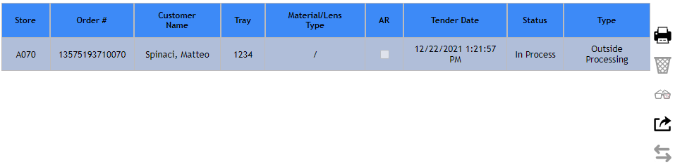

Tracciatura
La tracciatura viene svolta se l'ordine è un Lens Only.
Una volta terminato il flusso di creazione dell'ordine verrà emesso il Lab Ticket che servirà per il processo di tracciatura.
Recarsi al tracer e premere il bottone 1 o 2 in base a quello che il tecnico il giorno del Go live vi ha settato, che permette la trasmissione dell'ordine al laboratorio di Sedico. Successivamente, eseguire la tracciatura e scannerizzare il Garber ID presente sul Lab Ticket ed eseguire la tracciatura della montatura.


Successivamente accedere a LPA e selezionare l'ordine appena concluso. Selezionare l'icona per vedere il risultato della tracciatura appena eseguita.

Se l'ordine che stiamo effettuando è un Frame to Came e vogliamo modificarlo in un Lens Only, dobbiamo cliccare su Back e selezionare Lab Processing Type e successivamente Change Lab nel menù delle opzioni.
Scegliere Outside_Processing tra le opzioni del menù a tendina associato alla voce Edit Lab e Lens_only_cut_and_edge tra le opzioni associate a Job Type.
Successivamente flaggare Send Trace e cliccare Continue. In questo modo avremo cambiato il nostro ordine in un Lens Only.

Se invece il nostro ordine è già un Lens Only, non sarà necessario effettuare l'operazione appena descritta, ma basterà cliccare di nuovo l'icona.
Verranno mostrate due schermate successive di riepilogo in cui è possibile continuare per confermare la tracciatura, eseguire nuovamente il processo di tracciatura o tornare Indietro per continuare a modificare.
Nel campo Edge Type è possibile selezionare il tipo di montature (se metallo o plastica). Selezionare Continue per due volte



Trasmettere l'ordine a Sedico cliccando l'icona. Ancora una volta verrà proposta una schermata riepilogativa.Una volta trasmesso l'ordine lo Status dell'ordine passerà da Tendered a Trasmitted.
Nel caso in cui il WO fosse un Complete Pair, ma che alla fine del processo di creazione del WO Customer Order ci restituisce che è un lens only. (Frame non in Stock a Sedico) Sempre su LPA c\'è la possibilità di [trasmettere comunque l\'ordine lens only]{.underline} (senza aver preso realmente la tracciatura della frame). In questo caso si riceveranno le lenti sagomate correttamente.
Durante la tracciatura è importante sapere quale voce selezionare in base alla tipologia di montatura che si sta tracciando:
-
Se la montatura è standard, cioè NON rimless, basterà selezionare METAL e ZYL, come riportato nella tabella sottostante.
-
Se la montatura è invece di tipo RIMLESS, sarà necessario selezionare anche le altre voci riportate in tabella.
LPA Description Acuitas
Metal Metal Standard V Bevel / Metal
Zyl Plastic Standard V Bevel / Plastic
Groove Standard Groove
MTLGRV Inline groove
Drill Drill
N.B. Nel caso in cui per momentanei off della stampante, i Lab Ticket non fossero stati stampati automaticamente alla creazione del WO, il nuovo link presente nel Toolkit Lab Ticket Reprint (terza pagina) ci permetterà di ristamparli per i due giorni antecedenti.
Per farlo: accedere e sostituire la parte finale del link (evidenziata qui in rosso) con il numero dello store come appare nei WO (esempio store A062 inserirà 10062)
http://instorelabs.luxgroup.net/ticket/\<store_numbe>/ ->http://instorelabs.luxgroup.net/ticket/10062/